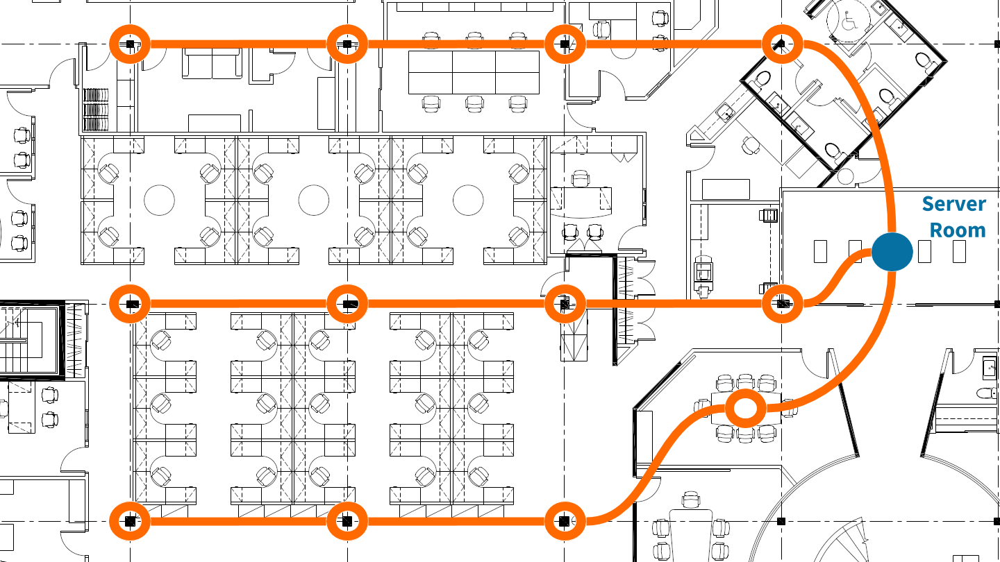
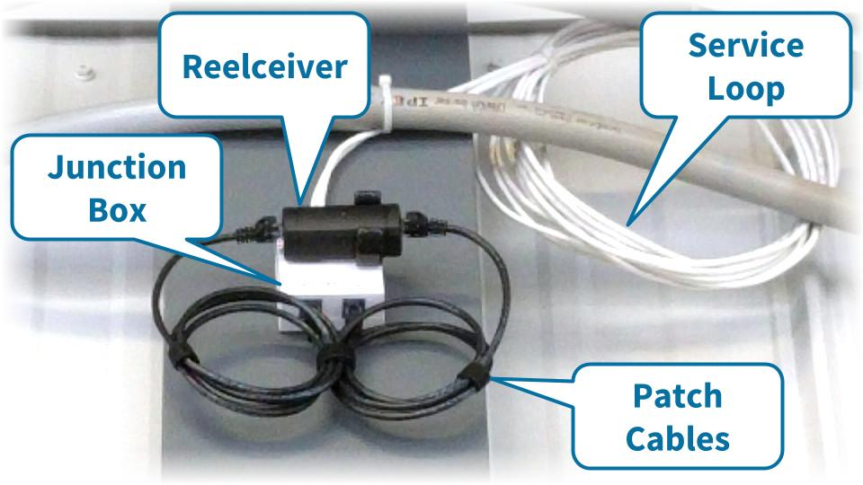
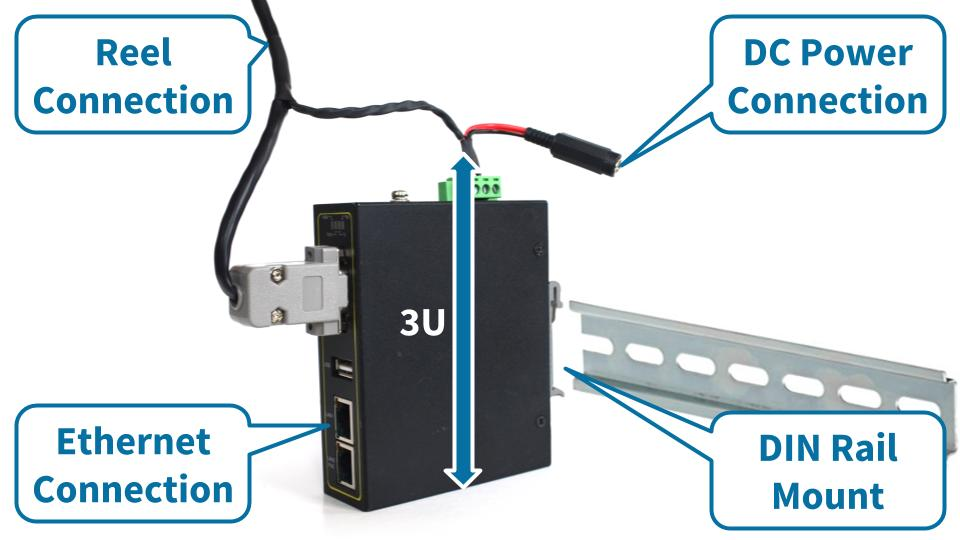

Reel Deployment Overview
How to deploy reelyActive daisy-chained reelceivers to cover a space

A reel is a daisy-chain configuration which reliably and cost-effectively extends infrastructure coverage over wide areas. This tutorial outlines the four steps to deploying reels to cover a space, namely:
Planning Routing Cabling Serving
Planning
Placing the reelceivers on the floorplan
The initial step is planning where to deploy the infrastructure within the space. This is typically accomplished using floorplans. Based on the application, infrastructure can be placed to maximise zone coverage and/or to provide granularity at specific points of interest (POIs).
| Strategy | Description |
|---|---|
| Zone coverage | Infrastructure is placed at regular spacing intervals, often in a grid pattern, providing complete and uniform coverage of the space. To facilitate deployment, it is common to place infrastructure on regular structural features such as support columns. Typical spacing is every 7m or one reelceiver for every 50m2. |
| Points of Interest | Infrastructure is placed at specific POIs where proximity or granular location is important. POI location accuracy is best within 2-3m range. |
The following floorplan serves as an example of a hybrid approach where:
- 11 reelceivers are placed on support columns to provide zone coverage
- 1 reelceiver is placed in a conference room to provide POI location granularity
| Consideration | Details |
|---|---|
| Mounting height | Reelceivers should be mounted at a height similar to that of the devices they are intended to detect — this is especially critical for POIs. For zone coverage, it is advisable to mount slightly higher to maximise line-of-sight over the spacing interval radius. For standard 3m ceilings, mounting at any height, including above a false-ceiling, is generally acceptable. |
| Line-of-sight | Reelceivers should be mounted away from metal and from massive obstructions such as concrete (unless the latter are to intentionally limit coverage of specific areas). Line-of-sight should be maximised throughout the target coverage area. When mounting on support columns, ensure at least a few centimetres spacing from the metal/concrete. |
| Physical access | Reelceivers should be mounted such that they are physically accessible for maintenance or inspection should the need arise. |
Routing
Connecting the reelceivers on the floorplan
Once the infrastructure placement is complete, the next step is to route the cables for the daisy-chain configuration. Routing can be performed such as to facilitate deployment provided it respects the following limits on reelceivers per reel and cable lengths.
| Constraint | Details |
|---|---|
| Reelceivers per reel | Any single reel should include no more than 6 reelceivers for typical applications. Applications with sparse wireless traffic can nonetheless reliably support additional reelceivers. |
| Cable lengths | No single cable run in the reel shall exceed 100m. This includes service loops and patch cord extensions! |
The following floorplan shows one possibility for routing the 12 reelceivers on three reels originating from the server room, each following a logical path along a row of support columns.
Cable identification
We propose the following convention for identifying each cable, which is illustrated on the floorplan below.
| Character(s) | Purpose | Details |
|---|---|---|
| First | Floor | The floor number on which the cable is installed. If the floor number is greater than 9, then the identifier will have one or more additional characters. If the floor number is less than 0, apply 'S' as a prefix. |
| Second | Reel | A single-character reel identifier, starting with 'A' for each floor. Consider omitting 'I' and 'O' to avoid confusion with floor/offset numbers. If the number of reels on the floor exceeds 'Z', continue with 'AA', 'AB' and so forth. |
| Third | Offset | The number of offsets from the server room (i.e. hub connection) starting from 0. If the offset number is greater than 9, then the identifier will have additional characters. |
Cabling
Running the cables in the space
Based on the routing plan, a network cable installer can complete the cable drops as per any specific aesthetic or functional requirements of the facility operator(s). At a minimum, each placement would simply receive an RJ-45 plug-terminated cable leading to each neighbour along the reel. The following image shows how a service loop, junction box and patch cables — or any combination thereof — can be used for flexible placement and/or aesthetics.

Labelling the cabling
Best practices make for better deployments
It is strongly advised to label the plugs/connectors at each placement with the corresponding identifier of each cable, as shown in the image. Reelceivers are directional, and consistent labelling greatly minimises reverse-installation errors.
If the connectors are visible and accessible such that they may be mistaken for Ethernet, it is highly advisable to label them to this effect so as to avoid any confusion.
Serving
Connecting the reels to the IP network
Each reel receives power and connectivity from a hub, which is typically installed in a server room. The '0' cable of each reel should be connected to a patch panel, if available, or a junction box (and labelled in either case).
The hub is an industrial serial-Ethernet converter with DIN Rail mounting capability. The hub can be securely mounted in two ways:
- on a DIN Rail affixed to a wall
- within a rack, occupying 3U, using a DIN Rail adapter

| Connection | Details |
|---|---|
| Reel | Connect to the '0' cable of the reel via the patch panel or junction box. The hub's cable harness provides a RJ-45 plug. |
| Ethernet | Connect via patch cable to an Ethernet switch providing network connectivity. The hub provides a RJ-45 jack. |
| Power | Connect to a 24VDC supply. The hub's cable harness provides a barrel connector jack (2mm x 5.5mm). |
What's next?
Learn more about our reel architecture, compare with our Owl-in-One deployment guide or return to the diyActive home page.